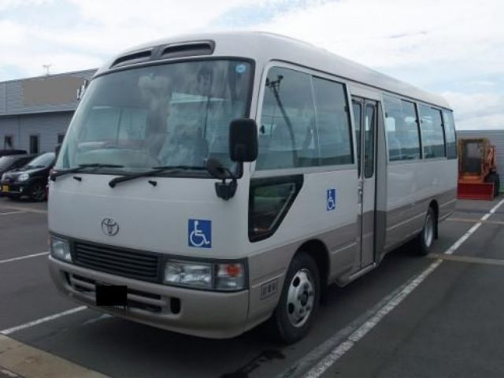
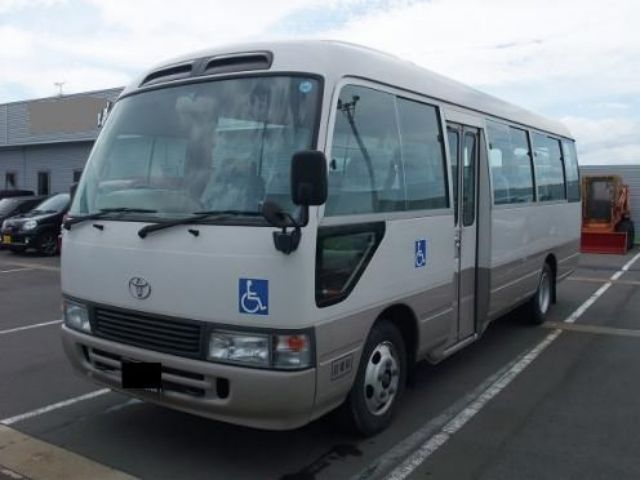
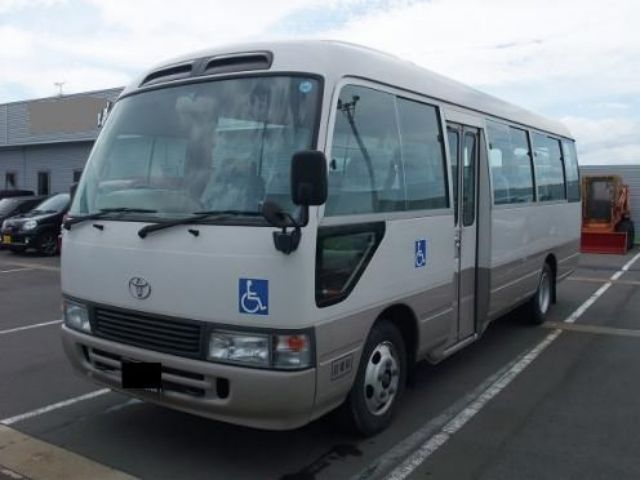

Hebrew/English speaking Chauffeur guide will meet you from Katunayake International Airport
and he will offer you assistance for the tour

Thereafter leave for Negombo(10km) and check in at Hotel Negombo
Then visit Negombo beach and Lagoon


Negombo city tour, watch old wood fish crafts and visit fishing town

Old dutch Fort Gate built in 1672
Stay night in Negombo
-